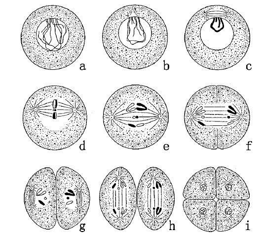
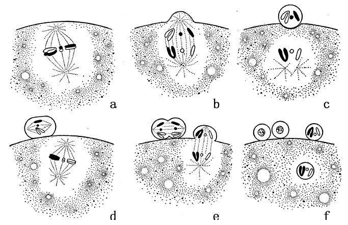
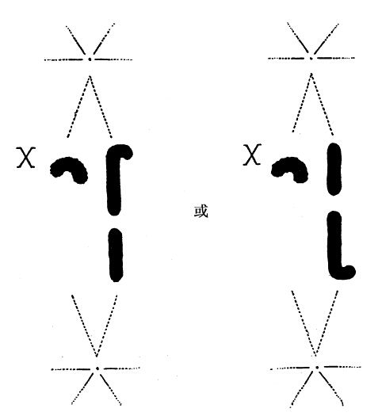

孟德尔两条定律的机制
到了生殖细胞的成熟末期，同体积的两条染色体接合成对。随后细胞分裂，每对的两条染色体各自进入一个细胞。因此，每个成熟的生殖细胞只能得到一组染色体（图21，22）。

图21 示精细胞两次成熟分裂。每一细胞假定含三对染色体；黑色代表来自父方的染色体，白色代表来自母方的染色体（a、b、c除外），图d、e、f示第一次成熟分裂为减数分裂。图g、h示第二次成熟分裂或“均等分裂”，这时每条染色体纵裂为两条新染色体

图22 示卵子的两次成熟分裂。a示第一次分裂的纺锤体；b示来自父方和母方的染色体互相分离（减数分裂）；c示第一极体已经分出；d示第二次成熟分裂的纺锤体，每条染色体纵裂为二（均等分裂）；e示第二极体已经形成；f示卵细胞核只有半数的子染色体（单倍）
染色体在成熟时期内的行动，同孟德尔第一定律平行。每对染色体中，来自父方的染色体同来自母方的染色体分离。结果在每个生殖细胞内每一类的染色体只有一条。就每一对染色体来说，成熟以后半数的生殖细胞含每一对的某一条染色体，另一半则含各该对的另一条染色体。如果把染色体改为孟德尔单元，措辞依然是一样的。
每一对染色体中，有一条来自父方，另一条来自母方。如果这种成对接合的染色体排列在纺锤体上面以后，所有父方的染色体都走入一极，所有母方的染色体则走入相反的一极，这样形成的两个生殖细胞势必分别和父体的或母体的生殖细胞相同。我们没有先验理由来假定接合染色体会依照这个方式行动，但要证明它们不这样行动，也感到非常困难，因为正在接合中的两条染色体，形状大小既然相同，要把父方染色体和母方染色体分辨开来，一般是不可能做到的。
不过，近年来已经发现了在少数蚱蜢的某些成对的两条染色体之间，在形状上以及同纺锤丝联系的方式上，有时表现轻微的差异（图23）。当生殖细胞成熟时，这些染色体首先两两接合，然后分离。由于染色体保持它们各自的差异，所以能够查明它们进入两极的踪迹。
在这几种蚱蜢里，雄虫有一条不成对的染色体，同雌雄性别的决定有关（图23）。当成熟分裂时，这条染色体只能进入纺锤体的一极，它可以作为其他成对染色体行动方向的标志。Carothers女士首先观察了这一事实。她看到有一对一直一曲的染色体，根据每一条染色体和性染色体的关系来看，它可以向任何一极分离开来。

图23 示一对常染色体和X染色体自由组合（仿Carothers）
进一步研究，发现在某些个体内其他几对染色体也表现一定的差异。研究这些染色体在成熟时期的行动，证明任何一对染色体向两极分布的方向同其他各对染色体的分布方向互不相关。从这里我们有了关于异对染色体相互间自由组合的客观的证据。这项证据同孟德尔关于不同连锁群的基因自由分配的第二定律平行。